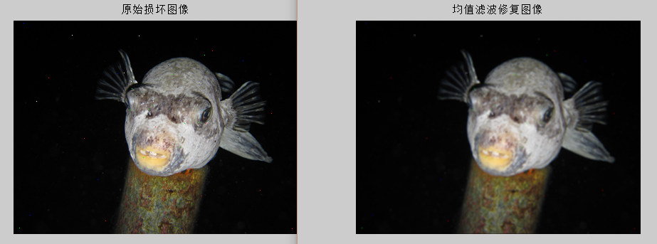
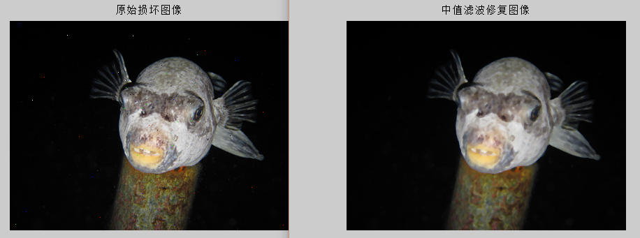

在Matlab中使用均值和中值滤波法去除图像中的噪点
简介
众所周知，图像通过信道传输不可避免的会被噪声干扰，在接收到的图片上产生噪点，想要去掉这些噪点常用的方法有：
- 均值滤波法
- 中值滤波法
- Wiener维纳滤波
今天我们主要讨论和比较均值滤波法和中值滤波法及其改进算法。
均值滤波法
均值滤波算法也称线性滤波，主要思想为邻域平均法，即用几个像素灰度的平均值来代替每个像素的灰度。有效抑制加性噪声，但容易引起图像模糊，可以对其进行改进，主要避开对景物边缘的平滑处理。
为方便起见我们使用MATLAB中的函数filter2对受噪声干扰的图像进行均值滤波
代码如下：1
2
3
4
5
6
7
8
9
10
11
12clc
clear all;
pic = imread('1.bmp');
imshow(pic)
title('原始损坏图像')
restored = pic;
for k = 1:3 % k=1,2,3表示分别对R,G,B三通道滤波
restored(:,:,k)=filter2(fspecial('average',3),pic(:,:,k)) %均值滤波函数
end
figure
imshow(restored);
title('均值滤波修复图像')
filter2函数此处作用是用图像中某一像素点的值用它周围的像素点的平均值来替换该处的像素点的值，具体参数和功能请参见matlab的帮助手册。
以下为修复结果：

中值滤波法
基于排序统计理论的一种能有效抑制噪声的非线性平滑滤波信号处理技术。中值滤波的特点即是首先确定一个以某个像素为中心点的邻域，一般为方形邻域，也可以为圆形、十字形等等，然后将邻域中各像素的灰度值排序，取其中间值作为中心像素灰度的新值，这里领域被称为窗口，当窗口移动时，利用中值滤波可以对图像进行平滑处理。其算法简单，时间复杂度低，但其对点、线和尖顶多的图像不宜采用中值滤波。很容易自适应化。
实现中值滤波可以使用medfilt2函数，但此处为了展示中值滤波原理，暂不用该函数。1
2
3
4
5
6
7
8
9
10
11
12
13
14
15
16
17
18
19clc
clear all;
pic = imread('1.bmp');
imshow(pic)
title('原始损坏图像')
a = size(pic);
restored = pic
for k = 1:3 %R,G,B三通道滤波
for i = 2:a(1)-1 %此处不确切，为了方便起见忽略了图片四周。
for j = 2:a(2)-1
round_dot=[pic(i-1,j,k) pic(i+1,j,k) pic(i+1,j+1,k) pic(i+1,j-1,k) pic(i-1,j+1,k) pic(i-1,j-1,k) pic(i,j+1,k) pic(i,j-1,k)];
sorted=sort(round_dot); %对周围的点排序
restored(i,j,k)=sorted(4); %取中值点
end
end
end
figure
imshow(restored);
title('中值滤波修复图像')
以下为修复结果：

算法改进
这里无论中值滤波还是均值滤波都是作用于所有的像素点的，即使该像素点没有错误也会被修改，降低了图像质量，且中值滤波中涉及排序算法，如果每个点都排序一遍将会有极大的计算量。
我们可以考虑在算法中添加一个判断步骤，先初步筛选出有可能是噪点的所有像素点，然后仅仅对这些像素点滤波，对均值滤波可以大大提高图像质量，对中值滤波可以大大降低计算量，缩短运行时间。
判断步骤可以是求像素点和周围像素点平均值的差，如果差值大于某一个阈值，我们可以初步认为该像素点有是噪声的“嫌疑”，然后对有“嫌疑”的像素点滤波。